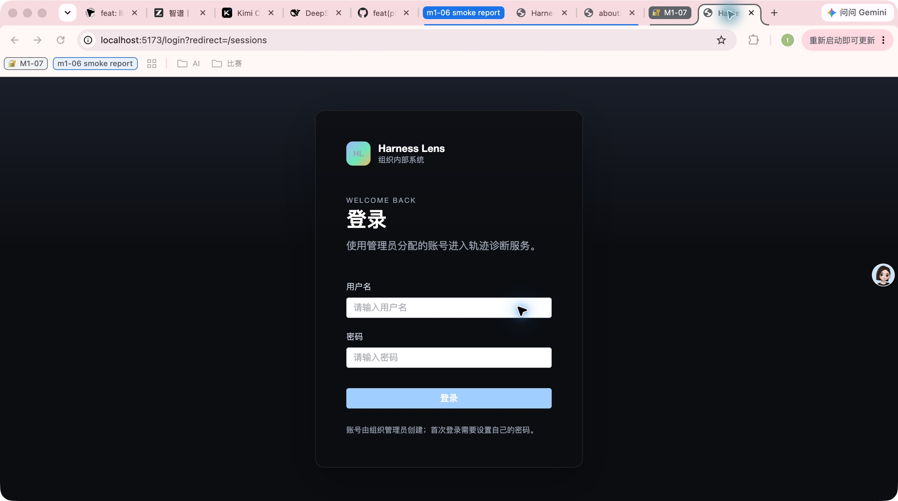
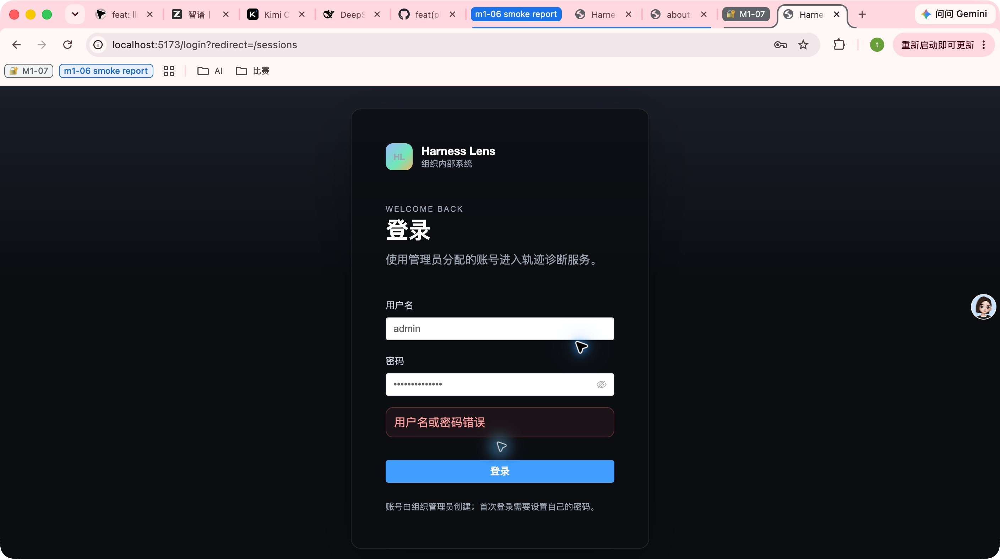
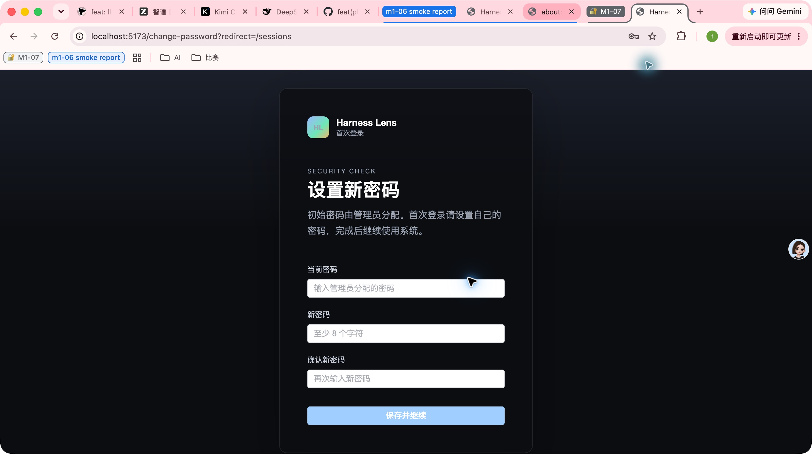
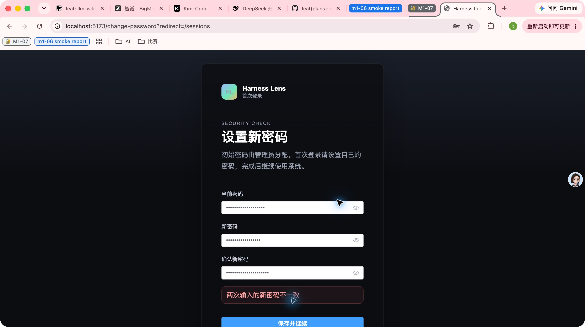
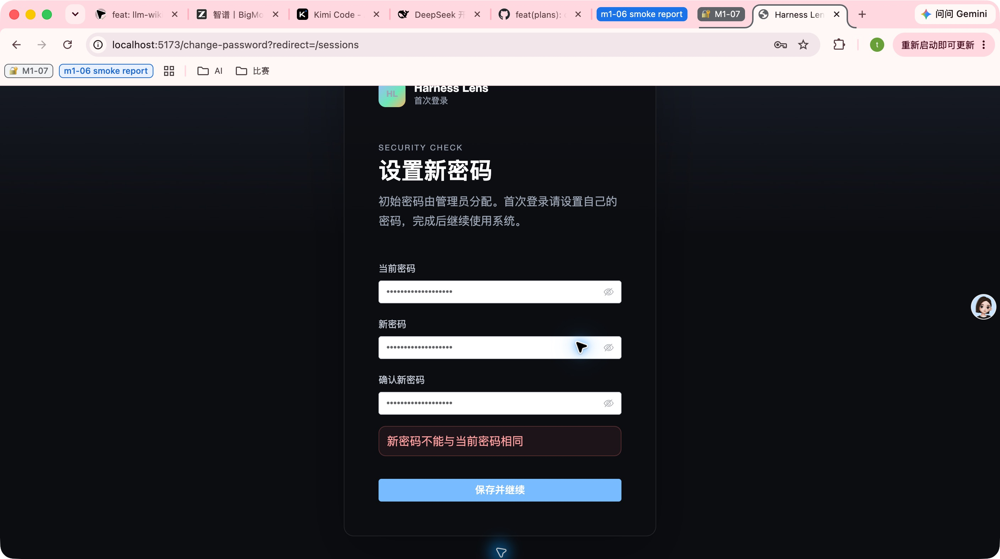
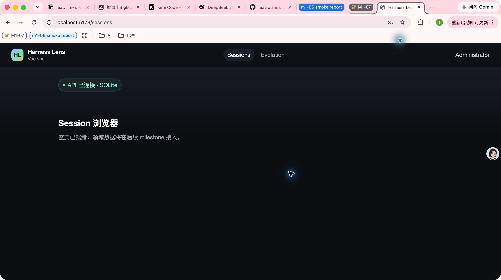
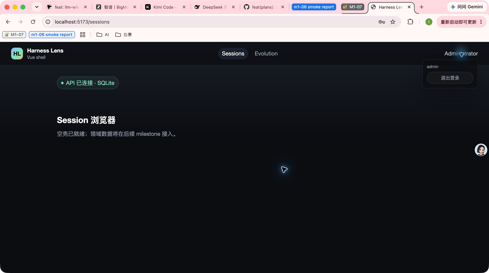
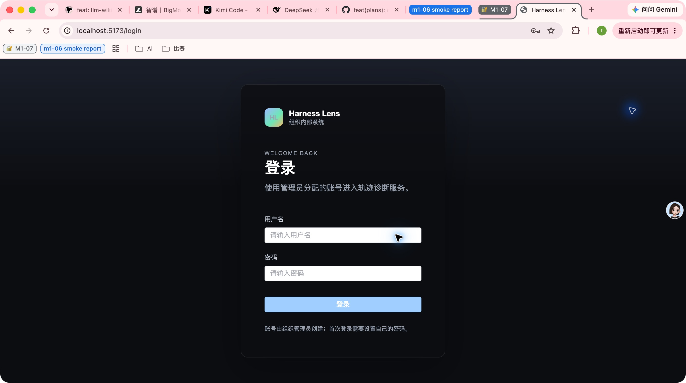
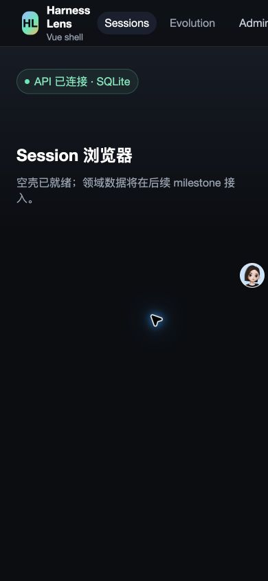

- Issue
- #30 · M1 identity frontend
- PR
- #77
- Commit
- 839e752
- Runtime
- FastAPI + SQLite + Vite + Chrome
- Browser viewport
- 1408×611 主视口；390×844 窄视口
Harness Evolution · PR #77
M1-07 身份前端真实 Chrome 冒烟报告
在真实 Chrome、Vite 与 FastAPI/SQLite 上走通未登录回跳、登录失败、首登改密、退出、重新登录及 refresh/me。发现登录输入首次渲染控制台错误和 390px 顶栏溢出两项缺陷，当前不建议合并。
14冒烟场景
12通过
2失败
84Web 自动测试通过
Environment and Artifact
2026-10-25 · macOS · Chrome · localhostScenario Matrix
12 pass · 2 fail| # | 场景 | 结果 | 观测 | 证据 |
|---|---|---|---|---|
| 01 | 未登录直达受保护页 | PASS | 访问 /sessions 被重定向到 /login?redirect=/sessions。 | screenshots/01-unauthenticated-login.jpg URL /login?redirect=/sessions |
| 02 | 错误密码内联提示 | PASS | 错误密码显示“用户名或密码错误”，未触发原生 alert。 | screenshots/02-login-invalid.jpg JS dialog count=0 |
| 03 | 首登强制改密 | PASS | 临时密码登录后只到 /change-password?redirect=/sessions。 | screenshots/03-force-password-change.jpg |
| 04 | 确认密码不一致 | PASS | 显示“两次输入的新密码不一致”，停留改密页。 | screenshots/04-password-mismatch.jpg |
| 05 | 新旧密码相同 | PASS | 显示“新密码不能与当前密码相同”，停留改密页。 | screenshots/05-same-password-rejected.jpg |
| 06 | 正常改密并回跳 | PASS | 合法新密码保存后回到 /sessions，顶栏显示当前用户。 | screenshots/06-password-changed-sessions.jpg |
| 07 | 顶栏用户区 | PASS | 用户菜单展示用户名与退出入口。 | screenshots/07-user-menu.jpg |
| 08 | 退出登录 | PASS | 退出后回到 /login，受保护导航消失。 | screenshots/08-logout-login.jpg |
| 09 | 退出后访问受保护页 | PASS | 再次访问 /sessions 仍回到 /login?redirect=/sessions。 | screenshots/08-logout-login.jpg |
| 10 | 新密码重新登录 | PASS | 新密码登录成功并回跳 /sessions。 | screenshots/09-relogin-success.jpg |
| 11 | Refresh 与 me | PASS | 真实 HTTP refresh 签发新 access，me 返回 admin 且 mustChangePassword=false。 | HTTP refreshIssuedAccess=true HTTP meUsername=admin |
| 12 | 初始渲染控制台 | FAIL | 登录页 ElInput 首次渲染产生 3 条 Vue warn 和 1 条 TypeError。 | console-initial.txt screenshots/02-login-invalid.jpg |
| 13 | 390px 窄视口 | FAIL | 视口 390px，文档滚动宽度 444px；用户菜单位于 x=348、宽约 96px，被右侧裁切。 | screenshots/10-narrow-overflow.jpg scrollWidth=444 > clientWidth=390 |
| 14 | 主视口无溢出 | PASS | 1408px 主视口下 scrollWidth 与 clientWidth 均为 1408。 | scrollWidth=1408 = clientWidth=1408 |
Issues and Observations
P1 登录与改密输入首次渲染产生 Vue 控制台错误P2 390px 窄视口顶栏横向溢出
登录与改密输入首次渲染产生 Vue 控制台错误
- 位置
- LoginForm.vue 的 ElInput；ChangePasswordCard.vue 使用同类控件
- 实际
- 控制台出现 Missing ref owner context、Unhandled error during execution of render function，以及 renderSlot 读取 null.ce 的 TypeError。
- 期望
- 页面首次渲染与后续导航不产生 warning/error。
- 根因候选
- 自定义 Element Plus 解析器与 ElementPlusResolver 同时参与组件解析；输入组件未能稳定创建 ref owner 上下文。
- 复现
- 新开 Chrome 标签访问 /login，读取该 tab 的 warn/error 日志。
未修复
390px 窄视口顶栏横向溢出
- 位置
- TopNav.vue 顶栏 brand/nav/user-menu 布局
- 实际
- scrollWidth=444，user-menu right=444.1，超过 390px 视口。
- 期望
- 窄视口无横向滚动，导航与用户入口保持可操作。
- 根因候选
- 顶栏始终单行 flex，缺少窄视口压缩、换行或菜单收纳规则。
- 复现
- 登录后进入 /sessions，将视口设为 390×844，读取 documentElement.scrollWidth。
未修复
Evidence
10 screenshots








Automated Coverage Assessment
5 areas reviewed| 区域 | 覆盖 | 结论 | 建议 |
|---|---|---|---|
| 身份主链路 | 真实 Chrome + FastAPI/SQLite | 登录失败、首登改密、成功回跳、退出与重新登录已验证。 | 保留浏览器冒烟作为发布前集成门禁。 |
| Token 恢复 | 真实 HTTP refresh + me | refresh 可签发新 access，me 返回最新强制改密状态。 | 继续保留单飞 refresh 的自动测试。 |
| 控制台健康 | Chrome tab dev logs | 首次登录渲染存在 Vue warn 与 TypeError，必须修复。 | 修复后从新 tab 重跑并断言 warn/error 为 0。 |
| 响应式布局 | 390×844 + 1408×611 实视口 | 主视口无溢出；窄视口顶栏溢出 54px。 | 补 390px 回归测试并增加窄屏导航收纳。 |
| 自动测试 | Web/API/集成套件 | Web 84 通过、1 跳过；但现有 jsdom 测试未捕获真实浏览器渲染错误与横向溢出。 | 新增浏览器级 console 断言与窄视口布局断言。 |
Conclusion
需修复后复测身份功能主链路可用，但两项真实浏览器问题阻止合并。
- 修复登录/改密输入组件首次渲染的 Vue warn 与 TypeError。
- 修复 390px 窄视口顶栏横向溢出，并各自补回归测试。
- 修复后必须从新 Chrome tab 重跑控制台和窄视口断言。
证据源：Computer Use 实机截图、Chrome tab 控制台、脱敏 HTTP 结果与自动测试。HTML 由 report-data.json 生成，不手改。